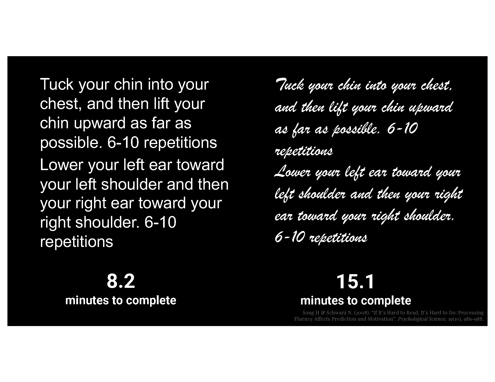

Making Things Difficult:
Font choice, disfluency effect, and focusing attention.
Harder to Read, Harder to Do
In a statement that will surprise very few people, “If It’s Hard to Read, It’s Hard to Do”1, which makes it a perfect title for a 2008 research study by H Song and N Schwarz at the University of Michigan2. Note that while this particular study is quite small (n = 20), it has been replicated by other studies with larger groups, of different ages, and with slightly different tasks, but the general premise and findings holds true.
The studies generally go like this.
A group of people are given a fairly simple health routine instruction sheet. They’re asked to read the instructions or exercises, and then evaluate how easy or difficult the routine would be, how long they thing it might take them, and how likely they are to incorporate it into their lives. (Sometimes they’re asked to actually do the exercises.)
The only differences are that some people are given the routine in a clean sans-serif font, like Arial, and others are given the routine in a slightly harder-to read font, like a Brush stroke.

As expected, participants had generally equal recall of the instructions in the two conditions and found the cleaner (Arial) font easier to read. Somewhat surprisingly (or not?) those that got the easier to read font also estimated that the activities in the routine would take less time and that those exercises would feel easier and faster. Furthermore, they also responded that they had a higher willingness to include the routine as part of their regular habits if they had the easier to read font.
Obvious statement of the day: people are more likely to do something they think is easy.
Slightly less obvious statement of the day: people think things are easier if you put it in an easy to read font.
If doing some action is “no big deal”, its easier to get someone to do it. This is fantastic to remember if you’re trying to help people start a new habit, or make some change, or pick up take out on the way home from work3.
But let’s throw a wrench into this. What if you don’t want something to be “no big deal”? What if you’ve got some results that are nuanced, counter-intuitive, or really need to sink in strongly with your audience?
Harder to Read, Easier (?) to Remember
Here’s where things get interesting. While ease of reading is undeniably important, some research suggests a paradoxical benefit to introducing a slight degree of difficulty into the reading process. This is referred to as the “disfluency effect”.
I’m just going to let Kühl and Eitel summarize the concept of disfluency:
the concept of disfluency refers to the metacognitive experience of ease or difficulty associated with completing a mental task. If task completion is perceived as easy or fluent, one often uses heuristics and intuitions to process information. If task completion is perceived as difficult or disfluent, by contrast, one is more likely to engage in effortful and analytic processing
The ELI54 version of this is if you think something is “too easy”, you won’t care about it as much, think its “less important”, and not spend any effort moving it from short term memory to long term memory. But if you think something is just a little bit difficult, you’ll work a little bit harder to get it into your brain and work to fully understand it.
The disfluency effect posits that when something requires a little bit more effort to decode, it can lead to better memory and recall. Basically, if your audience is already at least partly bought-in to what you’re presenting, it might be worthwhile to (counterintuitively) actually make it harder for them to read.
There is also disfluency as measured by pauses like ums and uhs in in a speech stream. Obviously, these are related to spoken word, not written word, and have a different implication that this short (ish) blog post is focusing on, but there is increasing research in the utility of these spoken disfluencies in memory and recall5. And the emerging evidence is intriguing. (I’ll try to cover this in a future post.)
So if something seems “too easy” when you read it, you may read it too fast, skip over salient information, and not remember it later. But if something is “too hard” to read, you may give up entirely or not understand it fully. But the arena of disfluency in typeface or font choice being an improvement over something easier to read is still a bit muddy.
But everyone isn’t just like you
Obviously theres some sweet spot between “too easy” and “too hard”.
Unfortunately (or fortunately?), that line is different for everyone.
Fortunately (or unfortunately?) Adobe is investing a lot of research into fonts and typefaces and comprehension. It’s a less-common instance of Corporate Research being made widely available and making the world just a little bit better! Because they’re sharing their work, I’m going to just give a basic summary and link you below. I highly recommend going to read their blog posts (which all link to the published research summarized within).
“The need to personalize fonts for each individual reader” is a great blog post summarizing some Adobe research that shows that there is no “best” font for everyone. They picked several pretty readable fonts (no fancy brush scripts here) and had people select their preference. And while people read their fastest font 35% faster than their slowest font, that wasn’t always their “favorite” font, and fast reading vs slow reading didn’t seem to matter (90% comprehension on multiple-choice questions across all fonts).6 7
If you’re interested in this kind of research, I also highly recommend The Readability Consortium, which is a partnership between Adobe, Google, UCF, and the NGO Readability Matters, which does a lot of research and outreach into, well, what it says on the tin: Readability.8
Well so what?
At the end of the day, the tl;dr is to pick something you like and that you think qualifies as “easy to read”.
Then run it by your coworkers and friends. Try it in a related but slightly different font. Don’t try to get “fancy” when it is critical that your audience understand and fully absorb your message.
Just remember that even your choice of font face matters.
Footnotes
In the great tradition of scientific articles (a tradition I enjoy, thank you very much), the full study involves a semi colon and should be written as “If It’s Hard to Read, It’s Hard to Do: Processing Fluency Affects Effort Prediction and Motivation”.↩︎
Song, H., & Schwarz, N. (2008). If It’s Hard to Read, It’s Hard to Do: Processing Fluency Affects Effort Prediction and Motivation. Psychological Science, 19(10), 986-988. https://doi.org/10.1111/j.1467-9280.2008.02189.x↩︎
Okuhara, Tsuyoshi et al. “Influence of high versus low readability level of written health information on self-efficacy: A randomized controlled study of the processing fluency effect.” Health psychology openvol. 7,1 2055102920905627. 12 Feb. 2020, doi:10.1177/2055102920905627↩︎
ELI5 = internet speak for “Explain it like I’m 5 years old”↩︎
Diachek, Evgeniia, and Sarah Brown-Schmidt. “The effect of disfluency on memory for what was said.” Journal of experimental psychology. Learning, memory, and cognition vol. 49,8 (2023): 1306-1324. doi:10.1037/xlm0001156↩︎
https://blog.adobe.com/en/publish/2022/05/10/the-need-to-personalize-fonts-for-each-individual-reader↩︎
This study also shows I probably shouldn’t use Open Sans, one of my fav typefaces. Sigh…↩︎